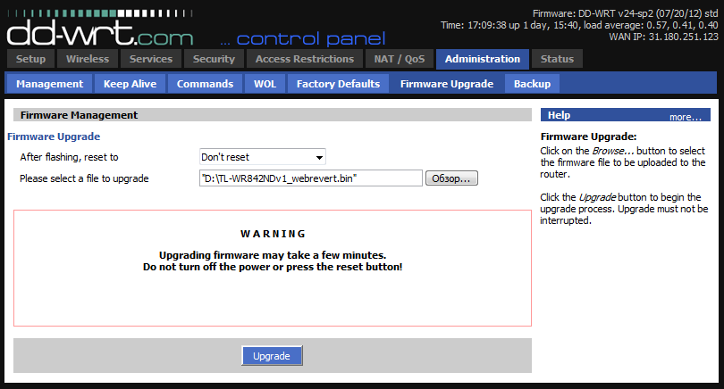

Возвращение оригинальной прошивки роутеров TP-LINK из DD-WRT
Опубликовано 22.07.2012
Попользовавшись прошивкой dd-wrt на таком замечательном роутере tl-wr842nd, появилось желание вернуть заводскую прошивку. Причины — чтобы прошивка dd-wrt заработала со всеми возможностями, её надо еще долго допиливать руками, на что не было никакого желания. Заводская прошивка имеет весь нужный функционал для домашнего пользования: usb с доступом к ftp из сети и интернета, samba, dlna.
Просто так прошить роутер официальной прошивкой с сайта производителя нельзя! Порывшись на форуме dd-wrt стало ясно что так все и задумано. Чтоб вернуть прошивку нужно воспользоваться файлом webrevert от самих dd-wrt для нужного роутера. Весь список файлов есть тут. Для скачивания файлов нужна регистрация на форуме. Или можно воспользоваться ссылкам ниже:
Все файлы прошивок находятся в архивах. Прошивка осуществляется через web интерфейс dd-wrt:

То есть, указывается файл прошивки, нажимается кнопка Upgrade, после чего роутер снова получит фирменную прошивку.